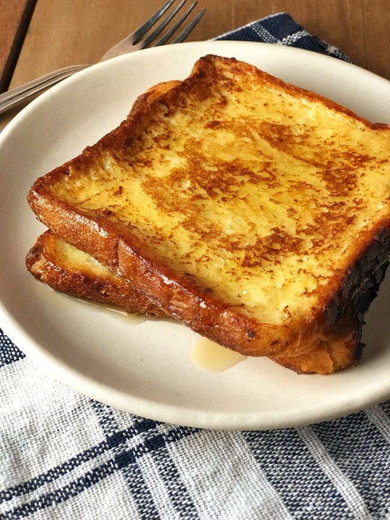

The Cozy French Toast

Ingredients
- 2 eggs
- 1 small slice of butter (just about any brand is fine)
- 1 coffee spoons of salt
- 2 coffee spoons of sugar
- 2 table spoon of milk
- As many slices of bread as your heart can desire!
Recipe
-
Put the eggs in a bow together with spoons of sugars, salt and milk, then give it a good twirl with a mixing tool of your choice.
Don't stop till everything is blended together all nice and creamy!
-
Submerge the bread slices completely in the egg mixtures. You can either dip the whole slices or cut them up into smaller pieces depending on the mixing bowl size.
Don't leave them in for too long or they are gonna be all soggy!
-
Put on the pan and stove, now we do the cooking!
Keep the heat at medium and let the butter slice melt in the pan. Remember to move it around to spread it evenly.
-
Turn the heat down about a quarter and put the dipped bread slices on the pan.
Flip them after about 2-3 minutes.
Keep your eyes on them! Charcoal does not exactly make a healthy breakfast.
-
Serve on a disk, often with milk for maximum healthiness!
back